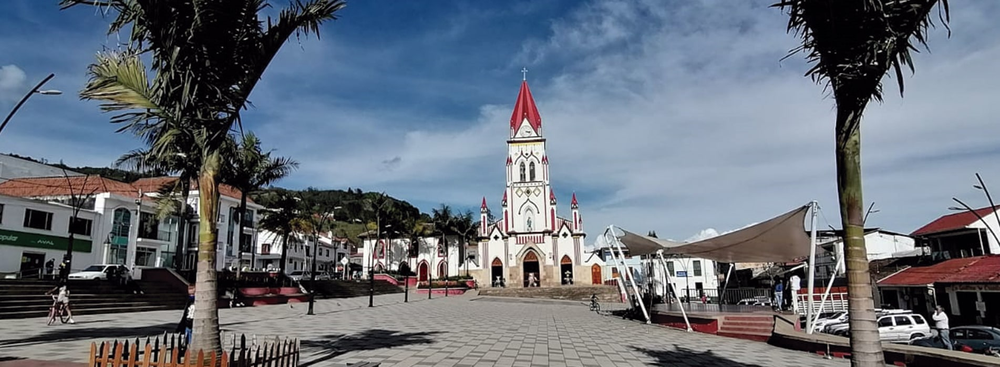

CHIPAQUE
Modelo analítico para el estudio de fallas geológicas
Las fallas geológicas son una de las causas de deslizamientos de tierra en el municipio, usando técnicas avanzadas de programación se presenta una herramienta para detectar y hacer seguimiento a esta problemática.